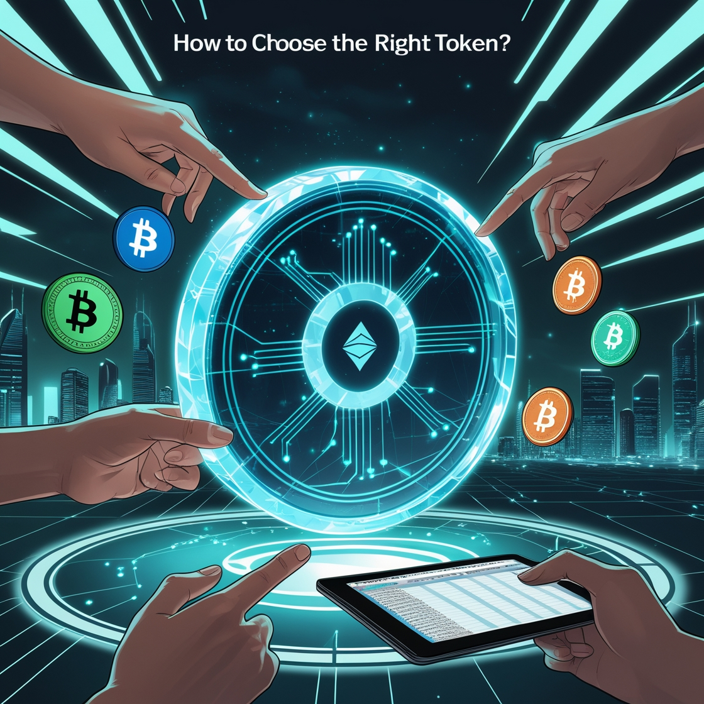

Guide complet pour évaluer et investir intelligemment

img crée par leonardo.ai
Sommaire
Investir dans la crypto peut être une aventure passionnante et rentable, mais il est important de bien comprendre les critères essentiels pour évaluer un token avant d'y engager votre argent.
Dans cet article, nous allons aborder les étapes clés à suivre pour choisir un token solide et éviter les pièges courants. Voici ce que j'aurai aimé savoir à mes débuts. Mais avant, bien évidement...
⚠️ Disclaimer : Cet article ne constitue pas un conseil financier. Les informations fournies ici sont à titre éducatif et informatif uniquement. Toute décision d’investissement dans les cryptomonnaies ou tokens doit être basée sur vos propres recherches approfondies. Investir dans les cryptomonnaies comporte des risques importants, notamment la perte totale du capital investi, en raison de la volatilité des marchés. Nous vous recommandons de consulter un conseiller financier qualifié avant de prendre toute décision. N’investissez jamais plus que ce que vous êtes prêt à perdre. L’auteur de cet article décline toute responsabilité quant à vos gains ou pertes sur vos investissements. Vous êtes le seul responsable de vos actions sur le marché. Restez prudent et investissez intelligemment. 🚀
Comprendre l’utilité du token
Le premier critère à évaluer est l'utilité réelle du token. 🪙
À quoi sert-il ?
Un token utile apporte de la valeur tangible au projet derrière lui. Par exemple, si un token permet l’accès à des services ou à une plateforme décentralisée innovante, il devient un actif précieux. Un token d'un projet IA, comme Fetch.ai, pourrait par exemple être indispensable pour accéder à des outils de machine learning. En revanche, un token purement spéculatif, sans réelle utilité, peut voir sa valeur fluctuer fortement et rapidement.
Est-il indispensable ?
Il est essentiel de se demander si le projet pourrait exister sans le token. Si le token n’est qu’un moyen de « tokeniser » un projet qui pourrait fonctionner sans lui, méfiez-vous. Par exemple, un projet qui aurait pu exister en tant qu’application traditionnelle, mais qui a choisi d'émettre un token sans réelle valeur ajoutée, peut être risqué. Fuyez ces projets !
Comprendre la valorisation d'un token est primordial pour évaluer son potentiel à long terme.
Analyse de la valorisation et du rang (rank)
Market Cap (capitalisation) :
Recherchez des projets sous-évalués avec un potentiel de croissance. Un token dont la market cap est trop élevée pour un projet naissant peut être surévalué, mais cela n’est pas toujours le cas. À titre d'exemple, des tokens comme Ethereum ont vu leur capitalisation croître de manière exponentielle après des évolutions techniques significatives. Regardez également les tokens ayant un faible market cap et un potentiel de développement, comme Polkadot au début de son lancement
Rank :
Les tokens dans le top 100 sont généralement plus stables, mais ils n’offrent pas forcément de rendements spectaculaires. Ceux dans le top 1000 peuvent cacher des pépites, mais attention, ce sont aussi des investissements plus risqués. Exemple : Chainlink, qui a quitté le top 100 pour exploser ensuite dans le top 10.
FDV (Fully Diluted Valuation) :
La FDV vous donne une idée de la valorisation totale possible du token une fois tous les tokens en circulation. Si la FDV est disproportionnée par rapport à l’utilité du projet, méfiez-vous. En revanche, une FDV raisonnée, soutenue par un projet avec de solides fondamentaux, peut justifier une certaine valorisation.
La dilution : ennemie des investisseurs
La dilution de l’offre en tokens peut réduire considérablement la valeur de votre investissement. Voici les éléments à surveiller :
Max Supply vs Circulating Supply :
Vérifiez combien de tokens sont déjà en circulation. Si le nombre de tokens en circulation est faible par rapport à l'offre maximale (Max Supply), cela indique une dilution à venir. Par exemple, Solana a connu une forte dilution au fil du temps, avec un grand nombre de tokens libérés après son lancement, ce qui ne lui à pas empeché de monter considérablement deux ans aprés.
Calendrier de libération des tokens :
Les dates de déblocage des tokens sont cruciales. Les gros déblocages, notamment pour les investisseurs ou l’équipe fondatrice, peuvent créer une pression vendeuse importante sur le marché. Il est essentiel de connaître ces dates pour éviter d’investir trop près de la libération. Exemples : Tezos et Filecoin, qui ont connu des périodes de pression après de grandes vagues de déblocage.
L'équipe et la roadmap
La réussite d'un projet dépend souvent de la solidité de son équipe et de la clarté de sa roadmap.
Qui est derrière ?
Une équipe transparente, expérimentée et active est un bon indicateur. Vérifiez les profils des fondateurs sur LinkedIn ou leurs contributions passées dans d'autres projets réussis. Des projets comme Cardano et Polkadot se sont largement appuyés sur leurs équipes respectives pour devenir des acteurs de poids dans le monde crypto.
La roadmap est-elle réaliste ?
Une roadmap claire et structurée inspire confiance. Fuyez les promesses floues et trop ambitieuses. Si un projet n'a pas encore franchi les premières étapes de sa roadmap, ou présente des promesses irréalisables, c'est un signal d'alarme. Par exemple, le projet EOS a connu des délais de mise en œuvre interminables, ce qui a nui à sa réputation.
Communauté et adoption
La force d’une communauté engagée est un signe souvent annonciateur du succès d’un projet.
Engagement :
Un token dont la communauté est active sur des plateformes comme Reddit, Telegram, et Discord est un bon indicateur de son potentiel. Par exemple, des projets comme Shiba Inu ont montré l'impact d’une communauté très active, même si le projet reste spéculatif.
Adoption :
Un token utilisé par de nombreuses personnes ou partenaires stratégiques aura plus de chance de voir sa demande augmenter. Des métriques comme le nombre d’utilisateurs actifs mensuels et le volume des transactions peuvent être un bon indicateur de l’adoption réelle du token.
Analyse technique et fondamentaux
Il est important de se baser sur des critères techniques et des audits de sécurité avant de prendre une décision d'investissement.
Audit du smart contract :
Assurez-vous que le code du smart contract a été audité par des sociétés tierces fiables comme Certik ou Quantstamp. Cela vous permet de limiter les risques de hacks et d'attaques.
Tokenomics :
L’analyse des tokenomics est essentielle. Une répartition trop généreuse pour l’équipe ou les investisseurs privés peut entraîner des tensions au sein de la communauté et une pression sur le prix à court terme. Veillez à ce que la répartition des tokens soit équilibrée et cohérente avec les objectifs du projet.
Partenariats :
Certains tokens affichent de grands partenariats mais il est crucial de vérifier qu'ils sont réels et non purement marketing. Par exemple, Ripple et Santander ont établi des partenariats solides qui soutiennent l’adoption du token XRP.
Soyez honnête avec vous-même
La clé d’un investissement réussi est de bien comprendre pourquoi vous achetez un token.
strong>Pourquoi achetez-vous ?
< Si vous investissez uniquement pour spéculer sur la hausse des prix, vous jouez à un jeu risqué. Il est préférable de considérer un token comme un investissement dans une technologie ou un projet avec de solides bases, comme dans le domaine de l'IA.
Êtes-vous prêt à perdre ?
Il est essentiel de ne jamais investir plus que ce que vous êtes prêt à perdre. Même les meilleurs projets peuvent échouer. Cela étant dit, ne cédez pas à la tentation de faire des investissements impulsifs.
Le bon timing pour entrer : Ne vous précipitez pas !
Un conseil de Warren Buffett simple : « Ayez peur quand les autres sont avides et avides quand les autres sont craintifs ». Quand tout le monde achète une action ou crypto parce qu'elle est populaire, c'est probablement surévalué. Et quand les gens paniquent et vendent, ce sera peut-être le bon moment pour acheter.
À l'écriture de cet article, le 02/01/2025, nous sommes dans une phase de Bullrun, ce qui n'est généralement pas le meilleur moment pour entrer dans un projet. Cependant, les corrections du marché offrent des opportunités intéressantes pour entrer à un prix plus bas. C'est ce que l'on observe actuellement, avec des prix qui reviennent à des niveaux de support précédents après une forte hausse.
Les médias peuvent exagérer la situation ( pléonasme ou truisme ? *), avec des titres comme "Bitcoin chute en flèche", mais cela peut aussi représenter une opportunité déguisée. Le marché a tendance à se stabiliser après une forte montée, offrant des occasions pour acheter à des prix plus intéressants.
L’art de patienter :
Au lieu de céder à la peur ou à la FOMO (Fear of Missing Out), attendez ces moments où le marché purge les excès. Ce sont ces creux qui permettent d’acheter ( ou de recharger ) à des niveaux stratégiques, loin de l’euphorie et du bruit médiatique.
Petit conseil bonus :
suivez les mouvements des baleines et analysez le volume. Un repli avec un volume décroissant peut signaler une belle zone d’achat.

Utilisez des outils d’analyse pour éclairer vos choix
Choisir un bon token nécessite des données solides, et plusieurs outils peuvent vous aider :
Binance, CoinGecko et CoinMarketCap : Ces plateformes fournissent une vue d’ensemble des tokens, y compris :
- ✅ Market Cap
- ✅ Volume d’échange
- ✅ Circulating Supply
- ✅ Fully Diluted Valuation (FDV)
- ✅ Classement par popularité
- ✅ Retracement de Fibonacci ( explication et tuto de cette outil magique pour prendre des décision éclairé )
TradingView : Un incontournable pour l’analyse technique. Vous y trouverez :
- Des outils de tracé pour identifier les supports, résistances, et zones de rechargement.
- Les indicateurs comme le RSI ou les bandes de Bollinger.
Glassnode : Une plateforme avancée d’analyse on-chain, parfaite pour observer les mouvements des whales et les flux des exchanges.
Messari : Idéal pour des rapports détaillés et des analyses approfondies sur les fondamentaux des projets crypto.
CryptoQuant : Une ressource précieuse pour surveiller les flux entrants et sortants des exchanges en temps réel.
Enfin, pour acheter ou trader des cryptomonnaies, vous pouvez utiliser une plateforme centralisé fiable et idéal pour les débutants avec tout les outils vue dans cette article, comme Binance.
Puis pour sécuriser vos actifs en décentralisé ( directement sur la blockchain sans intermédiaire ), pensez à un cold wallet de qualité et made in France tel que Ledger.

img crée par dall-e
Les red flags : Apprenez à détecter les signaux d'alerte 🚩
Certains projets peuvent sembler prometteurs en surface, mais présentent des signaux d'alerte qui doivent inciter à la prudence.
Whitepaper vague ou inexistant : Un projet sérieux propose un whitepaper bien structuré, détaillant clairement sa vision, ses objectifs et sa stratégie. Si le whitepaper est trop court ou rempli de jargon marketing sans substance, méfiez-vous.
Promotions excessives : Une surcommunication sur les réseaux sociaux ou des promesses démesurées comme "Des gains garantis à 100 %", "Le prochain Bitcoin" ou "Rejoignez la révolution" sont souvent des indices d'arnaque.
Liquidité faible : Vérifiez sur des sites comme CoinGecko si le volume des échanges quotidiens est suffisant pour éviter de rester bloqué avec un token difficile à revendre.
Audit inexistant : Si le smart contract n'a pas été audité ou si le projet est fermé sur ses processus techniques, il peut y avoir des failles de sécurité ou des intentions douteuses.
Le rôle des stablecoins dans une stratégie d’investissement
Un bon investisseur sait équilibrer son portefeuille avec des stablecoins (comme USDT, USDC ou DAI). Voici pourquoi :
Sécuriser vos profits : Lorsqu'un token atteint un sommet et commence à corriger, convertir vos gains en stablecoins vous permet de préserver votre capital sans quitter le marché crypto.
Acheter pendant les creux : Les stablecoins sont idéaux pour racheter des actifs à un prix réduit lors des baisses de marché.
Diversifier vos investissements : Si un projet que vous suivez devient prometteur, vous aurez la flexibilité d'y allouer une partie de vos stablecoins sans devoir liquider d'autres positions.
Impact des cycles de marché et psychologie des investisseurs
Il est important de comprendre comment les cycles de marché influencent les prix des tokens et comment maîtriser vos émotions pour éviter les erreurs courantes :
Euphorie du bull run : Pendant un bull run, beaucoup de projets voient leur prix exploser. Cela attire de nouveaux investisseurs qui achètent souvent à des prix trop élevés par peur de manquer une opportunité (FOMO). Soyez vigilant et ne suivez pas la foule.
Panique du bear market : Pendant un bear market, les investisseurs moins expérimentés paniquent et vendent souvent à perte. C'est pourtant pendant ces périodes que les opportunités d'achat à bas prix se présentent.
Stratégie DCA (Dollar Cost Averaging) : Investir de manière régulière une somme fixe (par exemple, chaque mois) permet de lisser les fluctuations et de réduire les risques liés au timing du marché.
Importance de la sécurité : Comment protéger vos tokens
🔐 Une fois que vous avez acheté des tokens, il est essentiel de les protéger.
Portefeuilles sécurisés : Utilisez des wallets non custodials comme MetaMask, Trust Wallet, attention toutefois aux tentatives de phishing courant avec ces wallets.
La manière la plus simple et la plus sécurisé pour conserver vos crypto reste les hardware wallets comme Ledger ou Trezor.
✅ Ledger offre 30$ en Bitcoin à partir de 79€ d'achat en passant par ce lien ⬇️

Double authentification (2FA) : Activez toujours la 2FA sur vos comptes d'exchange pour éviter tout accès non autorisé.
Clés privées et phrases de récupération : Ne partagez jamais vos clés privées ou phrases de récupération et stockez-les hors ligne dans un endroit sûr.
Ressources éducatives pour aller plus loin
Formations : Plateformes comme Binance Academy ou Coinbase Learn offrent des cours gratuits.
Livres : Recommande des classiques comme The Bitcoin Standard de Saifedean Ammous ou Blockchain Basics de Daniel Drescher.
Chaînes YouTube : Chaînes réputées, si vous ne devez suivre qu'un contenu, Paul Lavoie est pour moi de loin le meilleur avec son groupe Cryptorecherche.com, il offre une expertise unique du marché chaque semaine et priviligie l'éducation.
Je vous met sa dernière vidéo ici car elle s'adresse tout particulièrement au débutants et résume assé bien ce que je viens de dire concernant la fomo et la patience 😉 Bon visionnage
Nous venons de faire le tour des points réelement important à connaitre avant de vous lancer, j'èspere que cela vous à plu.
Encore une fois faites vos propre recherches, éduquez vous et ne prennez pas ces conseils pour valeur sur. Ce monde est l'opportunité de reprendre le pouvoir et la responsabilité sur notre argent, alors ne là laissons pas passer mais restons curieux car ce n'est pas un jeu, éduquons nous et soyons prudent. Merci.
Bonne recherche et bon gain 🚀
Def : *
Pléonasme repose sur la racine grecque pleon, qui exprime l'idée d'excès ou de superflu. Le mot illustre donc parfaitement son sens : une redondance ou une répétition inutile dans le langage.
Le mot truisme vient de l'anglais truism, lui-même dérivé de true (vrai). Ce terme désigne une vérité tellement évidente qu'elle en devient banale ou inutile à exprimer.